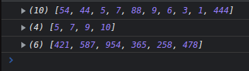
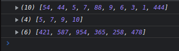
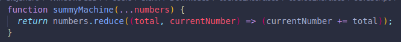
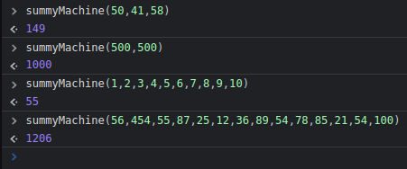
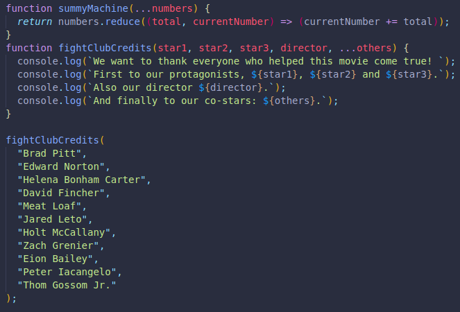
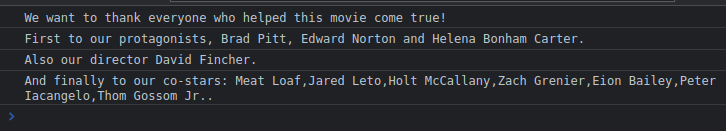

the rest spread helps us collect all arguments into an array. (It collects the REST OF the values).
If we wanted to add 50 different values with a single function, we would need 50 parameters inside the function's parenthesis when being created.
Instead, rest lets us save all arguments into a single array.
 

Now we can use rest to actually make our sum calculator!
 We can also do this with strings!
 